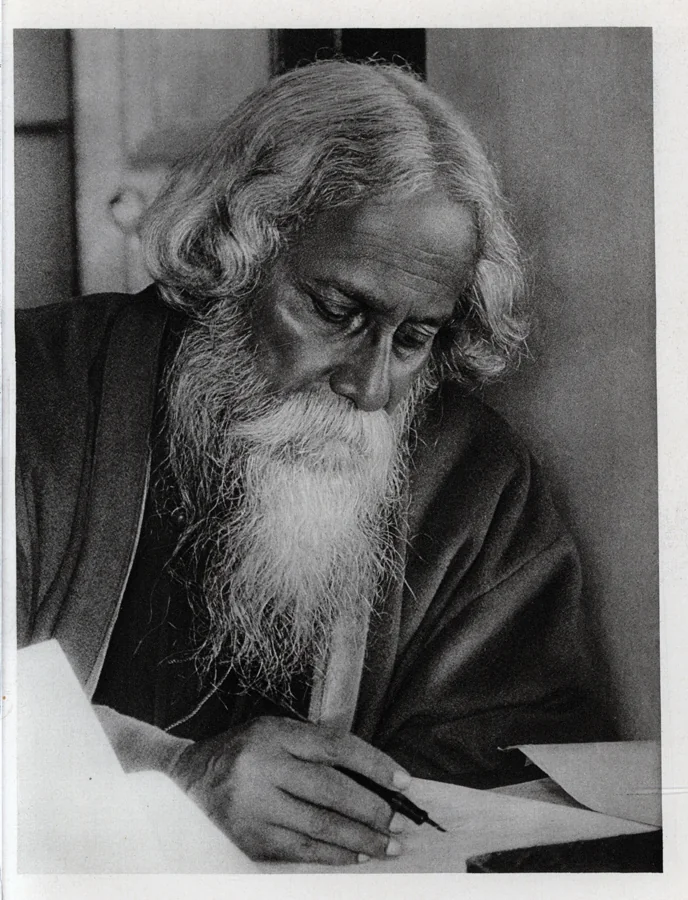
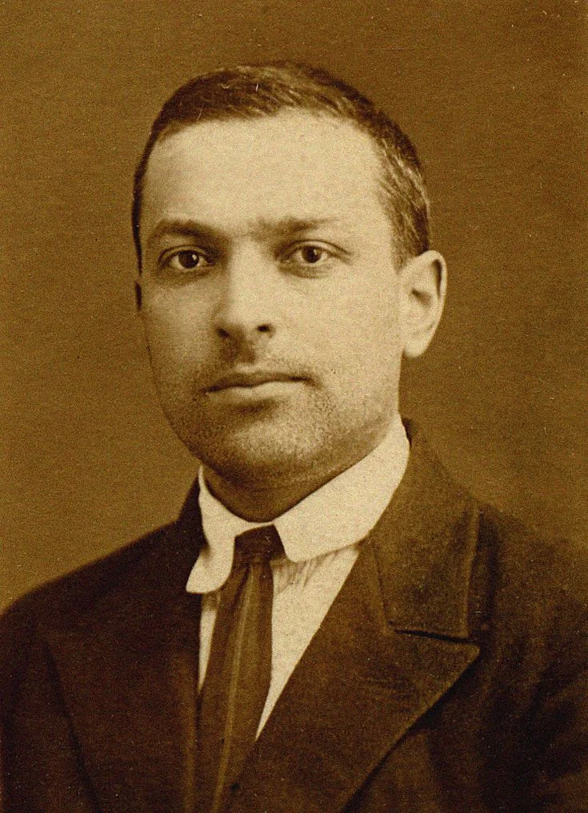

Featured lesson · Planning evidence
Democracy · Lesson Plan No. 6
A 40-minute school-practicum plan covering democratic government, elections and citizen participation through questioning, visuals, discussion and written practice.

B.Ed. & M.A. History in progress
History & Social Science Educator
I help students read the past with curiosity, evidence and confidence.
Roles of interest: TGT Social Science · TGT English (B.Ed. Pedagogy) · PGT History (post-M.A. 2027)
Subjects of interest: History · Social Science · Economics · English (B.Ed. pedagogy subject)
Featured lesson · Planning evidence
A 40-minute school-practicum plan covering democratic government, elections and citizen participation through questioning, visuals, discussion and written practice.

Teaching-learning material
Illustrated classroom poster covering nomination, campaigning, voting and results.

Internship report
Original 27-page NTCC report. It records 80 hours at Pehchaan and 50 hours of adult literacy work, with weekly reflections and annexures.
Four-day school observation · 4 Days
1–4 December
CompletedExplore experienceFive-week teaching internship · 5 Weeks
1 June–6 July 2026
CompletedExplore experienceSixteen-week B.Ed. school internship · 16 Weeks
16 July–31 October 2026
OngoingExplore experienceCurrent studies (Concurrent) · Latest completed degree
2025–Present
Amity Institute of Education, Amity University, Noida
Final examinations expected in April 2027 · Pedagogy subjects: Social Science / History & English
In progress · Expected 20272025–Present
Indira Gandhi National Open University (IGNOU)
First year completed and cleared · Final examinations expected in June 2027
In progress · Expected 20272018–2021
Gurukul Kangri Vishwavidyalaya
CGPA 8.80 CompletedIdeas that guide my teaching
Start with the learner. Understanding grows through curiosity, dialogue and support toward independent thinking.

Intellectual influence
Room for curiosity & creative expression.
Holistic education and creative inquiry remind me to keep History connected to the whole learner, cultivating imagination alongside analytical critique.

Intellectual influence
Support toward independent reasoning.
Dialogue, guided source work, and the zone of proximal development help learners advance from scaffolded inquiry to autonomous historical explanation.
I want learners to explain ideas and give reasons. My Democracy plan begins with prior-knowledge questions and includes discussion of elections and protest.
I aim to support different starting points. The published plan combines a concept diagram, photographs, discussion and written responses; targeted adaptations are a next area to document.
I plan checks before, during and after explanation. The Democracy plan includes diagnostic questions, guided practice and an independent task; collecting responses will help me evaluate these choices.
Available from May 2027
Open to teaching opportunities and conversations about education.
Open to relocation anywhere in India